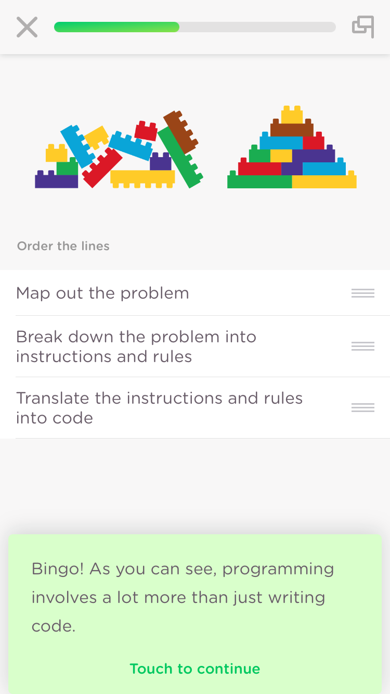

In your tables:
library(rio)
library(stringr)
library(stringi)
scriptures <- import("http://scriptures.nephi.org/downloads/lds-scriptures.csv.zip")
bm <- scriptures %>% filter(volume_short_title == "BoM")bm_counts <- bm %>%
group_by(verse_title, chapter_id, book_id, chapter_number, verse_number, book_title) %>%
summarise(word_count = stri_stats_latex(scripture_text)["Words"],
charsword = stri_stats_latex(scripture_text)["CharsWord"],
charswhite = stri_stats_latex(scripture_text)["CharsWhite"])bm_locs <- bm$scripture_text %>%
str_locate_all(c("Jesus")) %>%
lapply(function(x) nrow(x)) %>%
unlist()
sum(bm_locs)The challenge: Use the savior names list and write out how you would use a for loop to find/break this one verse into chunks to get a word count between each.
verse <- read_lines("https://byuistats.github.io/M335/data/2nephi2516.txt")
names <- import("https://byuistats.github.io/M335/data/BoM_SaviorNames.rds")This task is a challenge. It has potential to bring the some of you to your knees. After 4-hours of working on the challenge you can stop and then spend 1/2 hour writting up how you were going to tackle the task and what you learned.